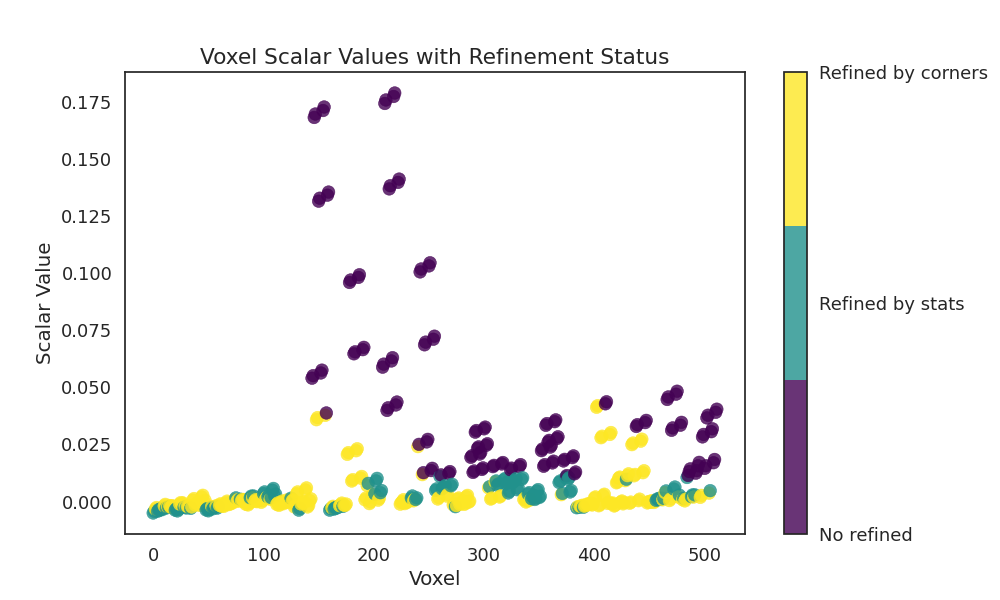
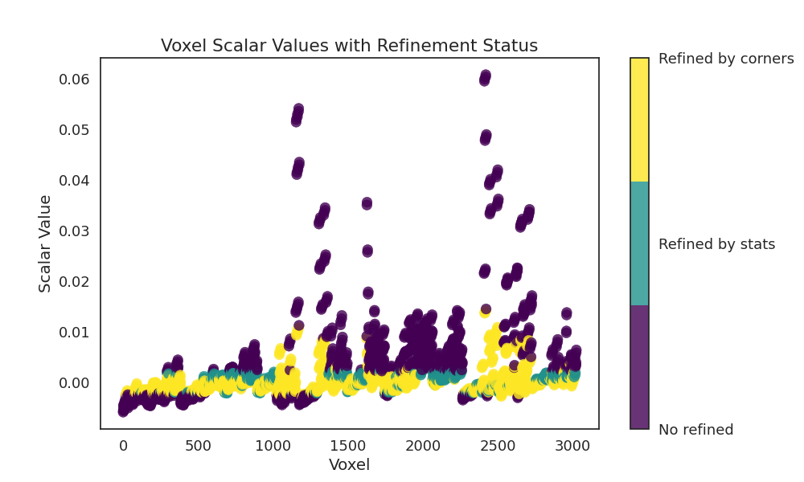

Note
Go to the end to download the full example code
Construct Spremberg: Building initial model¶
This example demonstrates…
# sphinx_gallery_thumbnail_number = -1
import numpy as np
import gempy as gp
import gempy_viewer as gpv
from subsurface.modules.visualization import to_pyvista_line, to_pyvista_points
from vector_geology.model_contructor.spremberg import generate_spremberg_model, get_spremberg_borehole_set, add_wells_plot
Python-dotenv could not parse statement starting at line 13
Python-dotenv could not parse statement starting at line 14
Python-dotenv could not parse statement starting at line 15
Python-dotenv could not parse statement starting at line 16
Python-dotenv could not parse statement starting at line 17
elements_to_gempy = {
"Buntsandstein" : {
"id" : 53_300,
"color": "#983999"
},
"Werra-Anhydrit" : {
"id" : 61_730,
"color": "#00923f"
},
# "Kupferschiefer" : {
# "id" : 61_760,
# "color": "#da251d"
# },
"Zechsteinkonglomerat": {
"id" : 61_770,
"color": "#f8c300"
},
"Rotliegend" : {
"id" : 62_000,
"color": "#bb825b"
}
}
spremberg_boreholes = get_spremberg_borehole_set()
geo_model: gp.data.GeoModel = generate_spremberg_model(
borehole_set=spremberg_boreholes,
elements_to_gempy=elements_to_gempy,
plot=False
)
/home/leguark/subsurface/subsurface/modules/reader/wells/_read_to_df.py:13: ParserWarning: Falling back to the 'python' engine because the 'c' engine does not support sep=None with delim_whitespace=False; you can avoid this warning by specifying engine='python'.
d = reader(
/home/leguark/subsurface/subsurface/modules/reader/wells/read_borehole_interface.py:130: SettingWithCopyWarning:
A value is trying to be set on a copy of a slice from a DataFrame.
Try using .loc[row_indexer,col_indexer] = value instead
See the caveats in the documentation: https://pandas.pydata.org/pandas-docs/stable/user_guide/indexing.html#returning-a-view-versus-a-copy
lith_df['top'] = np.abs(lith_df['top'])
/home/leguark/subsurface/subsurface/modules/reader/wells/read_borehole_interface.py:131: SettingWithCopyWarning:
A value is trying to be set on a copy of a slice from a DataFrame.
Try using .loc[row_indexer,col_indexer] = value instead
See the caveats in the documentation: https://pandas.pydata.org/pandas-docs/stable/user_guide/indexing.html#returning-a-view-versus-a-copy
lith_df['base'] = np.abs(lith_df['base'])
/home/leguark/subsurface/subsurface/modules/reader/wells/_read_to_df.py:13: ParserWarning: Falling back to the 'python' engine because the 'c' engine does not support sep=None with delim_whitespace=False; you can avoid this warning by specifying engine='python'.
d = reader(
Well '13E_56' does not exist in the attributes DataFrame.
Well '4_56' does not exist in the attributes DataFrame.
Well '64_59' does not exist in the attributes DataFrame.
Well 'DOE104_63' does not exist in the attributes DataFrame.
Well 'H3_71' does not exist in the attributes DataFrame.
Well 'H4_71' does not exist in the attributes DataFrame.
Well 'H5_71' does not exist in the attributes DataFrame.
Well 'H6_71' does not exist in the attributes DataFrame.
Well 'H7_71' does not exist in the attributes DataFrame.
Well 'MUSK1_00' does not exist in the attributes DataFrame.
Well 'MUSK1_62' does not exist in the attributes DataFrame.
Well 'N1_71' does not exist in the attributes DataFrame.
Well 'N10_71' does not exist in the attributes DataFrame.
Well 'N11_71' does not exist in the attributes DataFrame.
Well 'N2_71' does not exist in the attributes DataFrame.
Well 'N3_71' does not exist in the attributes DataFrame.
Well 'N8_71' does not exist in the attributes DataFrame.
Well 'N9_71' does not exist in the attributes DataFrame.
('cell',) are not coordinates with an index xarray dataset must include 'cell' key (KeyError) or xarray 'cell' has no index (ValueError).
/home/leguark/subsurface/subsurface/modules/reader/wells/_read_to_df.py:13: ParserWarning: Falling back to the 'python' engine because the 'c' engine does not support sep=None with delim_whitespace=False; you can avoid this warning by specifying engine='python'.
d = reader(
/home/leguark/.virtualenvs/gempy_2024.2/lib/python3.10/site-packages/gempy/core/data/grid_modules/grid_types.py:248: UserWarning: FigureCanvasAgg is non-interactive, and thus cannot be shown
plt.show()
/home/leguark/.virtualenvs/gempy_2024.2/lib/python3.10/site-packages/gempy_viewer/API/_plot_3d_API.py:213: UserWarning: FigureCanvasAgg is non-interactive, and thus cannot be shown
plt.show(block=False)
Add one orientation to the model
rotliegend: gp.data.StructuralElement = geo_model.structural_frame.get_element_by_name("Rotliegend")
gp.add_orientations(
geo_model=geo_model,
x=[5_460_077.527386775, 5_450_077.527386775],
y=[5_720_030.2446156405, 5_710_030.2446156405],
z=[-600, -600],
elements_names=["Rotliegend", "Rotliegend"],
pole_vector=[
np.array([.7, 0.7, 0.2]),
np.array([-1, 0, 0.2])
],
)
pivot = [5_478_256.5, 5_698_528.946534388]
point_2 = [5_483_077.527386775, 5_710_030.2446156405]
point_3 = [5_474_977.5974836275, 5_712_059.373443342]
section_dict = {
'section1': (pivot, point_2, [100, 100]),
'section2': (pivot, point_3, [100, 100]),
'section3': (point_2, point_3, [100, 100])
}
gp.set_section_grid(geo_model.grid, section_dict)
gpv.plot_section_traces(geo_model)
Active grids: GridTypes.NONE|SECTIONS|OCTREE
/home/leguark/.virtualenvs/gempy_2024.2/lib/python3.10/site-packages/gempy_viewer/API/_plot_2d_API.py:200: UserWarning: FigureCanvasAgg is non-interactive, and thus cannot be shown
plot.fig.show()
<function plot_section_traces at 0x7f797772e440>
_ = gpv.plot_3d(
model=geo_model,
ve=10,
image=True,
transformed_data=True,
kwargs_pyvista_bounds={
'show_xlabels': False,
'show_ylabels': False,
},
kwargs_plot_data={
'arrow_size': 0.001000
}
)
/home/leguark/.virtualenvs/gempy_2024.2/lib/python3.10/site-packages/gempy_viewer/API/_plot_3d_API.py:213: UserWarning: FigureCanvasAgg is non-interactive, and thus cannot be shown
plt.show(block=False)
# * Ignore curvature for now
geo_model.interpolation_options.kernel_options.range = 3
geo_model.interpolation_options.compute_scalar_gradient = False
geo_model.interpolation_options.evaluation_options.octree_curvature_threshold = 0.4
geo_model.interpolation_options.evaluation_options.number_octree_levels_surface = 5
geo_model.interpolation_options.evaluation_options.octree_error_threshold = 1
geo_model.interpolation_options.evaluation_options.verbose = True
gp.compute_model(
gempy_model=geo_model,
engine_config=gp.data.GemPyEngineConfig(
backend=gp.data.AvailableBackends.PYTORCH,
dtype="float64",
)
)
- 
- 
Setting Backend To: AvailableBackends.PYTORCH
Chunking done: 9 chunks
/home/leguark/.virtualenvs/gempy_2024.2/lib/python3.10/site-packages/gempy_engine/modules/octrees_topology/_octree_internals.py:205: UserWarning: FigureCanvasAgg is non-interactive, and thus cannot be shown
plt.show()
Number of voxels marked by stats: 353 of torch.Size([512]).
Number of voxels marked by corners : 248
Total voxels: 353
Dense Grid would be 512 voxels
Chunking done: 8 chunks
/home/leguark/.virtualenvs/gempy_2024.2/lib/python3.10/site-packages/gempy_engine/modules/octrees_topology/_octree_internals.py:205: UserWarning: FigureCanvasAgg is non-interactive, and thus cannot be shown
plt.show()
Number of voxels marked by stats: 1681 of torch.Size([3024]).
Number of voxels marked by corners : 1306
Total voxels: 1681
Dense Grid would be 4096 voxels
Chunking done: 35 chunks
Chunking done: 14 chunks
gpv.plot_2d(
model=geo_model,
figsize=(15, 15),
ve=10,
section_names=['section1', 'section2', 'section3']
)
/home/leguark/.virtualenvs/gempy_2024.2/lib/python3.10/site-packages/gempy_viewer/API/_plot_2d_sections_api.py:105: UserWarning: Section contacts not implemented yet. We need to pass scalar field for the sections grid
warnings.warn(
/home/leguark/.virtualenvs/gempy_2024.2/lib/python3.10/site-packages/gempy_viewer/API/_plot_2d_API.py:174: UserWarning: FigureCanvasAgg is non-interactive, and thus cannot be shown
p.fig.show()
<gempy_viewer.modules.plot_2d.visualization_2d.Plot2D object at 0x7f790b5aad10>
gempy_plot = gpv.plot_3d(
model=geo_model,
show_lith=False,
ve=10,
show=False,
image=False,
transformed_data=False,
kwargs_pyvista_bounds={
'show_xlabels': True,
'show_ylabels': True,
'show_zlabels': False,
},
kwargs_plot_data={
'arrow_size': 100.001000
}
)
well_mesh = to_pyvista_line(
line_set=spremberg_boreholes.combined_trajectory,
active_scalar="lith_ids",
radius=10
)
units_limit = [0, 20]
collars = to_pyvista_points(spremberg_boreholes.collars.collar_loc)
gempy_plot.p.add_mesh(
well_mesh.threshold(units_limit),
cmap="tab20c",
clim=units_limit
)
gempy_plot.p.add_mesh(
collars,
point_size=10,
render_points_as_spheres=True
)
gempy_plot.p.add_point_labels(
points=spremberg_boreholes.collars.collar_loc.points,
labels=spremberg_boreholes.collars.ids,
point_size=3,
shape_opacity=0.5,
font_size=12,
bold=True
)
gempy_plot.p.show()
LiquidEarth Integration¶
Beyond the classical plotting capabilities introduced in GemPy v3, users can now also upload models to LiquidEarth. LiquidEarth is a collaborative platform designed for 3D visualization, developed by many of the main gempy maintainers, with a strong focus on collaboration and sharing. This makes it an excellent tool for sharing your models with others and viewing them across different platforms. To upload a model to LiquidEarth, you must have an account and a user token. Once your model is uploaded, you can easily share the link with anyone.
# # %%
if False:
link = gpv.plot_to_liquid_earth(
geo_model=geo_model,
space_name="Spremberg",
file_name="gempy_model",
user_token=None, # If None, it will try to grab it from the environment
grab_link=True,
)
print(f"Generated Link: {link}")
Total running time of the script: ( 0 minutes 11.808 seconds)